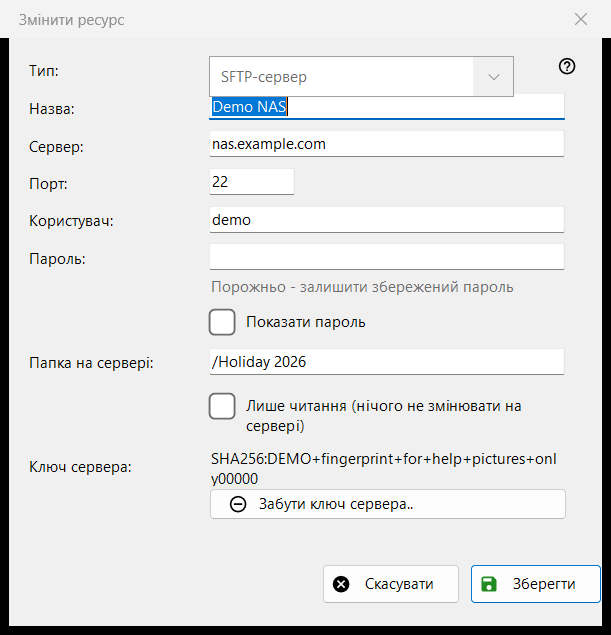
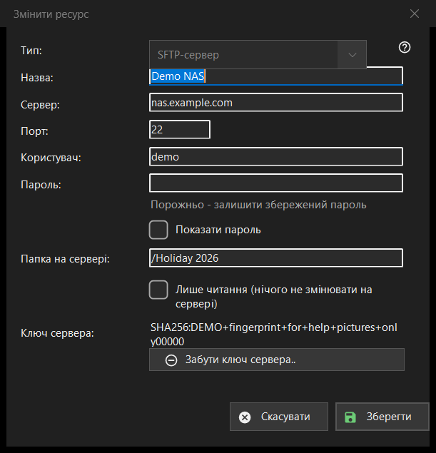

Змінити ресурс
Призначення
Форма одного збереженого сервера чи мережевої папки. «Додати..» у списку ресурсів відкриває її порожньою під назвою «Новий ресурс», «Змінити..» - заповненою під назвою «Змінити ресурс», а адреса sftp://, набрана в рядку теки, відкриває її із заповненими полями.


Порядок дій
- Виберіть тип: SFTP-сервер або мережева папка (SMB).
- Задайте назву й введіть адресу сервера та порт або мережевий шлях.
- Введіть ім'я користувача та пароль.
- Вкажіть теку на сервері й позначте «лише читання», якщо там нічого не можна змінювати.
- Натисніть «Зберегти».
Елементи вікна
Тип
«Тип:» вибирається під час створення ресурсу: «SFTP-сервер» (порт 22, тека /) або «Мережева папка (SMB)». У збереженого ресурсу список недоступний: пароль і ключ сервера прив'язані до одного типу. Для SMB поле адреси називається «Мережева папка:» і приймає шлях виду \\сервер\папка; поля порту й теки є лише в SFTP.
Назва, сервер і порт
«Назва:» - те, що видно в списку; якщо вона порожня, береться адреса сервера. «Сервер:» - ім'я або IP-адреса, «Порт:» - число від 1 до 65535. Зміна сервера чи порту відкидає інші адреси, що прийшли з імпортованим ресурсом, щоб збережений пароль не пішов на адресу, якої ви не вводили.
Користувач і пароль
«Користувач:» і «Пароль:». Пароль зберігається в зашифрованому вигляді для вашого облікового запису Windows; у списку лежить лише посилання на нього. У збереженого ресурсу поле порожнє з підказкою «Порожньо - залишити збережений пароль»: вводьте щось, лише щоб замінити пароль. «Показати пароль» спочатку вимкнено. Для нового ресурсу пароль обов'язковий.
Тека і лише читання
«Папка на сервері:» - тека, яку переглядач відкриває першою, шлях, що починається з /. «Лише читання (нічого не змінювати на сервері)» змушує переглядач вважати ресурс доступним лише для читання: нічого не можна переносити чи копіювати в нього, видаляти й перейменовувати в ньому.
Ключ сервера
«Ключ сервера:» показує відбиток, запам'ятований для цього сервера, а якщо його немає - повідомляє, що він з'явиться під час першого підключення, де ви його підтверджуєте. Кнопка «Забути ключ сервера..» видима, лише коли ключ запам'ятовано. Вона спершу питає (відповідь за замовчуванням «Ні») і пояснює: якщо сервер перевстановили, це нормально, інакше хтось може видавати себе за сервер. Стирається лише ключ: під час наступного підключення програма покаже новий відбиток і спитає знову.
Зберегти
«Зберегти» перевіряє поля й червоним під ними називає першу проблему: адресу, порт, теку, ім'я користувача або відсутній пароль. «Скасувати» закриває форму без змін.